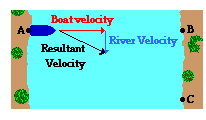
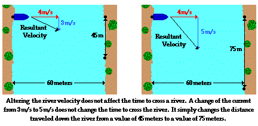

Panel
Vectors - Motion and Forces in Two Dimensions >> Lesson 1 - Vectors: Fundamentals and Operations
1.8 Independence of Perpendicular Components of Motion
A force vector that is directed upward and rightward has two parts - an upward part and a rightward part. That is to say, if you pull upon an object in an upward and rightward direction, then you are exerting an influence upon the object in two separate directions - an upward direction and a rightward direction. These two parts of the two-dimensional vector are referred to as components. A component describes the affect of a single vector in a given direction. Any force vector that is exerted at an angle to the horizontal can be considered as having two parts or components. The vector sum of these two components is always equal to the force at the given angle. This is depicted in the diagram below.

Any vector - whether it is a force vector, displacement vector, velocity vector, etc. - directed at an angle can be thought of as being composed of two perpendicular components. These two components can be represented as legs of a right triangle formed by projecting the vector onto the x- and y-axis.

The two perpendicular parts or components of a vector are independent of each other. Consider the pull upon Fido as an example. If the horizontal pull upon Fido increases, then Fido would be accelerated at a greater rate to the right; yet this greater horizontal pull would not exert any vertical influence upon Fido. Pulling horizontally with more force does not lift Fido vertically off the ground. A change in the horizontal component does not affect the vertical component. This is what is meant by the phrase "perpendicular components of vectors are independent of each other." A change in one component does not affect the other component. Changing a component will affect the motion in that specific direction. While the change in one of the components will alter the magnitude of the resulting force, it does not alter the magnitude of the other component.

The resulting motion of a plane flying in the presence of a crosswind is the combination (or sum) of two simultaneous velocity vectors that are perpendicular to each other. Suppose that a plane is attempting to fly northward from Chicago to the Canada border by simply directing the plane due northward. If the plane encounters a crosswind directed towards the west, then the resulting velocity of the plane would be northwest. The northwest velocity vector consists of two components - a north component resulting from the plane's motor (the plane velocity) and a westward component resulting from the crosswind (the wind velocity). These two components are independent of each other. An alteration in one of the components will not affect the other component. For instance, if the wind velocity increased, then the plane would still be covering ground in the northerly direction at the same rate. It is true that the alteration of the wind velocity would cause the plane to travel more westward; however, the plane still flies northward at the same speed. Perpendicular components of motion do not affect each other.

Now consider an air balloon descending through the air toward the ground in the presence of a wind that blows eastward. Suppose that the downward velocity of the balloon is 3 m/s and that the wind is blowing east with a velocity of 4 m/s. The resulting velocity of the air balloon would be the combination (i.e., the vector sum) of these two simultaneous and independent velocity vectors. The air balloon would be moving downward and eastward.

If the wind velocity increased, the air balloon would begin moving faster in the eastward direction, but its downward velocity would not be altered. If the balloon were located 60 meters above the ground and was moving downward at 3 m/s, then it would take a time of 20 seconds to travel this vertical distance.
d = v • t. So t = d / v = (60 m) / (3 m/s) = 20 seconds
During the 20 seconds taken by the air balloon to fall the 60 meters to the ground, the wind would be carrying the balloon in the eastward direction. With a wind speed of 4 m/s, the distance traveled eastward in 20 seconds would be 80 meters. If the wind speed increased from the value of 4 m/s to a value of 6 m/s, then it would still take 20 seconds for the balloon to fall the 60 meters of downward distance. A motion in the downward direction is affected only by downward components of motion. An alteration in a horizontal component of motion (such as the eastward wind velocity) will have no affect upon vertical motion. Perpendicular components of motion are independent of each other. A variation of the eastward wind speed from a value of 4 m/s to a value of 6 m/s would only cause the balloon to be blown eastward a distance of 120 meters instead of the original 80 meters.
In the most recent section of Lesson 1, the topic of relative velocity and riverboat motion was discussed. A boat on a river often heads straight across the river, perpendicular to its banks. Yet because of the flow of water (i.e., the current) moving parallel to the river banks, the boat does not land on the bank directly across from the starting location. The resulting motion of the boat is the combination (i.e., the vector sum) of these two simultaneous and independent velocity vectors - the boat velocity plus the river velocity. In the diagram at the right, the boat is depicted as moving eastward across the river while the river flows southward. The boat starts at Point A and heads itself towards Point B. But because of the flow of the river southward, the boat reaches the opposite bank of the river at Point C. The time required for the boat to cross the river from one side to the other side is dependent upon the boat velocity and the width of the river. Only an eastward component of motion could affect the time to move eastward across a river.
Suppose that the boat velocity is 4 m/s and the river velocity is 3 m/s. The magnitude of the resultant velocity could be determined to be 5 m/s using the Pythagorean Theorem. The time required for the boat to cross a 60-meter wide river would be dependent upon the boat velocity of 4 m/s. It would require 15 seconds to cross the 60-meter wide river.
d = v • t. So t = d / v = (60 m) / (4 m/s) = 15 seconds
The southward river velocity will not affect the time required for the boat to travel in the eastward direction. If the current increased such that the river velocity became 5 m/s, then it would still require 15 seconds to cross the river. Perpendicular components of motion are independent of each other. An increase in the river velocity would simply cause the boat to travel further in the southward direction during these 15 seconds of motion. An alteration in a southward component of motion only affects the southward motion.
All vectors can be thought of as having perpendicular components. In fact, any motion that is at an angle to the horizontal or the vertical can be thought of as having two perpendicular motions occurring simultaneously. These perpendicular components of motion occur independently of each other. Any component of motion occurring strictly in the horizontal direction will have no affect upon the motion in the vertical direction. Any alteration in one set of these components will have no affect on the other set. In Lesson 2, we will apply this principle to the motion of projectiles that typically encounter both horizontal and vertical motion.